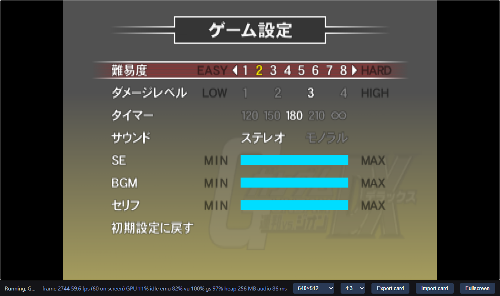

For a question-led Cantonese reading experience, see the research reader source. This English record retains the detailed commands, chronological experiments and evidence limits.
Scope
Reproduce the disc-to-C++-to-browser workflow established by
GVZG for the supplied Japanese
v2.00 game. The research question is whether that workflow transfers, which
findings remain useful, and what new failures appear. Deliver a verified
0.1.0 baseline, then only necessary 0.1.x fixes. The baseline stops
at original-timing validation. A later request adds an opt-in Online Mode
experiment, recorded separately below; the accepted baseline remains unchanged.
The reader covers both stages without treating the experiment as a new release.
Current status
The local 0.1.0 baseline passed the bounded normal-boot/Arcade/Side 7 gameplay
acceptance below, including controls and a completed loss/return flow. The
matched build and generated translation are now included in local Git; raw
captures remain ignored. Follow-up checks passed Side 7 victory into active
stage 2 and system/options save persistence across a same-profile page reload.
Other modes, campaign completion, browsers and cross-profile saves remain
unverified for the baseline. The later opt-in Online build passed a private
four-client 2v2 session across a PC and a MacBook Pro (three matches, results
and lobby return); see the dated Online Mode record below. Repository and wiki
publication setup is recorded at the end of this log.
2026-10-28: independent input and toolchain bring-up
The supplied 253,898,693-byte 7z archive contains a 4,282,515,456-byte ISO and a
small text file. Only the ISO was extracted into ignored .local/disc/, using
7zz x -y -o.local/disc ARCHIVE '*.iso'. Full SHA-256 values are in
upstream.lock: archive 8964d5b6…3df4e1, disc 11023ffb…37fd579.
The pinned upstream ISO reader reports one ISO 9660 layer, 2,091,072 sectors,
and an empty volume identifier. The actual SYSTEM.CNF names
cdrom0:\SLPM_650.76;1, VER = 2.00, VMODE = NTSC, and
HDDUNITPOWER = NICHDD. The ELF is 6,511,244 bytes, SHA-256
222e5a12e9dbb7e5be674327b9e2f53abbaf75fd19fc9136c7a11879c2f3d092,
little-endian ELF32 MIPS with symbols, entry 0x00100008. Its initialized
read/write/execute load segment begins at 0x00100000, has file size
0x47fa80, and memory size 0x9ace00. A second non-executable segment has
zero file and memory size. The serial is SLPM-65076.
The disc has 40 files. AFS_DATA.AFS contains 1,629 entries and G_ADX.AFS
contains 2,319. A bounded scan of the first 16 bytes of each entry found no
MWo3 or SNR2 header. TIM2, HITS, model-like numeric headers, IPU movie and ADX
headers were observed. This does not prove the absence of nested or compressed
code. No overlay from the reference game is reused.
REA open_binary independently identified the same ELF SHA-256 and MIPS
architecture. Its binary_overview returned capability_unavailable: the
available providers do not admit this machine-specific PS2 MIPS variant.
The session was closed. No decompilation success is claimed; the dedicated
R5900 recompiler and explicit file parsing remain available.
The compiler/runtime source is exported from the local Git object
6526f4803d98e10de50bea3af104a4d26e9df033, with a per-file manifest. The retained
upstream working tree and reference project's adaptive package are not source
inputs. Required reference documentation, extraction/build/server scripts and
baseline/rebuild evidence were reviewed read-only. The reference's old native
round completion and later adaptive browser checks do not transfer to this game.
A later compiler provenance check compared all 88 vendor files with the pinned Git object and rebuilt both tools from that source. All seven object files and both compiler binaries matched the retained tools byte-for-byte. This confirms the pristine compiler lineage; it adds no new gameplay result.
Initial commands on the Mac (two compile jobs):
cmake -S vendor/ps2-web-recomp -B .local/tools -G Ninja \
-DCMAKE_BUILD_TYPE=Release -DCMAKE_CXX_COMPILER=/usr/bin/clang++
cmake --build .local/tools --target eerecomp vurecomp --parallel 2
.local/tools/eerecomp .local/inputs/SLPM_650.76 --out .local/generated-pristine
AppleClang 16.0.0 built both tools. Translation reported 668,526 instructions,
10,825 functions, 62,169 entries, zero rejected seeds and 167 units (about
44 MiB). No runtime execution is implied by those counts. The repeatable
scripts/game/regenerate.py extracts a verified ELF with its serial filename
and writes source/input fingerprints. boot.txt preserves the exact disc boot
path for the browser build.
SSH connectivity to the authorized PC is verified. The PC has Windows 11,
Core i9-12900K, 64 GiB RAM, RTX 3080 Ti plus UHD 770, and Chrome 156.0.8078.48.
WSL Ubuntu 22.04 is available; Clang 17 and Ninja are installed but CMake and
Emscripten were not on PATH. Project-local tool setup and a dedicated browser
profile/task are being prepared. Tests will use browser-output mute, with audio
processing intact. Private host/account details and raw captures stay in .local.
Setup observations: system Python on the Mac is 3.9; its tarfile.extractall
does not accept filter= and /opt/homebrew/bin/python3 is absent. The vendor
export instead copies regular members from the known local Git archive.
Repository scripts target Python 3.9 or later. These setup failures did not
change the reference project.
Repeatable scripts and first PC execution
The scripted regeneration matched all 169 files from the direct pristine
translation byte-for-byte. The local HTTP server passed 14 synthetic tests on
Python 3.9.6: range/HEAD semantics, isolation headers, WASM MIME, path bounds,
and strict 16,384-byte VU recording with non-overwriting conflict handling.
The PC harness passed an actual Chrome self-test: the captured browser command
line included --mute-audio, while AudioContext time advanced. That fixture is
a harness check, not game acceptance.
The PC build uses project-local CMake 3.31.6, Clang 17.0.3 and extracted libc++17
headers/libraries. A std::format probe passed. The native build uses ordinary
-O1 -DNDEBUG, six jobs on the PC, and the software GS (no window). A first
transfer accidentally included macOS AppleDouble ._*.cpp sidecars; CMake
globbed them as source and compilation failed. Only those task-created sidecars
were removed. Later transfers use COPYFILE_DISABLE=1 tar --no-xattrs; the
builder now rejects a generated file set or hash differing from
translation.json. The corrected build linked ps2run in 200 build steps.
The first native command was:
PS2_VU_RECORD=RUN/vu1 PS2_DUMP=RUN/ram.bin PS2_DUMP_AUDIO=RUN/audio.wav \
timeout 90s BUILD/native/ps2run INPUTS/SLPM_650.76 --disc DISC --ntsc \
--misses RUN/misses.txt --memcard RUN/blank.ps2 --frames 900 \
--press 300:start --press 600:circle --frames-dir RUN/shots --frame-every 150
It reached the requested 900-frame limit without a missing-code halt. The frame-900 screenshot was inspected and shows the ADX startup logo. The newly created card was unformatted. IOP reboot and modules loaded from this disc; DEV9 reported unknown hardware, while the sound modules reached their startup messages. No networking functionality is claimed. The stereo 48 kHz WAV contained 430,336 frames, peak absolute sample 9,613, and 61,156 nonzero samples. The headless runner produced no audible output. This only establishes startup and nonzero native audio, not browser audio-ring pacing or gameplay.
The longer native run reached its requested 3,600-frame limit without a
missing-code halt. Frame 2,400 shows the pilot-name screen. No VU1 recording was
created during this bounded native menu path. The native executable is
19,364,032 bytes, SHA-256
adf01cbb1c461421041ea0c9922da77781d048fe85ef244fa69c981b35d3f84c.
First browser journey and fresh build
Emscripten 6.0.11 was installed inside the PC's project workspace, SDK Git
revision d7b4130688bfa348392b921ab04015aa15c4f154, compiler revision
a0014542110d6078c3a1a7941fa1ddb3a2281f16. Python's SDK downloader hit TLS
failures; EMSDK_USE_CURL=1 completed the same downloads. A small WASM program
compiled and ran before the game build. No global SDK/account settings changed.
Two fresh web workspaces were built through scripts/game/build.py --target web --translation .local/translation-pristine --jobs 6. The native-only libc++
environment flags were cleared first. WASM, JavaScript and data were
byte-identical across both builds. Only the page title changed from the initial
candidate label to the game name. Artifacts:
窄螢幕可以橫向滑動表格。
| File | Bytes | SHA-256 |
|---|---|---|
| ps2web.wasm | 17,360,658 | 49bed2bc5fd253b752159779f4150e18d441143f13ddb38dd1f57638f58e8094 |
| ps2web.js | 151,840 | 636a2e1344c6dd32881edd86881ffaec99e53d730392454b69133223b3649728 |
| ps2web.data | 6,511,266 | efc67275b871452f021038df43c008d52b32e7769ccd06f45600e01f501bc006 |
The first Chrome run used a new profile, the normal disc boot, a fresh card,
hardware NVIDIA WebGPU and --mute-audio. No save state or game-memory write
was used. The AudioContext remained running and the ring read pointer advanced.
Real keyboard input entered Arcade, selected Federation/Side 7, accepted the
default pilot name with Start, and selected Gundam with beam rifle for both
ground and space. The battle rendered mobile suits, scenery, radar, HUD and
the original timer. Movement changed position; two shooting inputs reduced
main ammunition from 10 to 9 to 8; Cross plus movement produced visible boost.
Pause screenshots kept the game timer at 106.00 while the runtime frame count
advanced. Resume restored the countdown. These observations support functional
controls, not pixel-perfect hardware emulation.
The run continued through a defeat animation and returned to the startup/title flow, then accepted Start back to the main menu. The first pass did not capture the short textual result/continue screen. It reached more than 50,000 runtime frames without a page exception or missing-code halt. A 62.579-second interval from the first battle capture to the pause capture advanced 3,756 frames (approximately 60.02 Hz). This is the untouched upstream NTSC model with audio consumption active, not adaptive/high-refresh rendering. The on-screen FPS readout fluctuates; measurements use timestamped counter differences.
No VU1 program was recorded through this battle, and the exposed interpreted
VU counter remained zero. Generated EE code contains VU0 macro operations
(for example ld128 into c.vu0.vf and vu::mul(c.vu0, ...)). No VU code from
another game is used. This bounded observation does not establish that every
mode has no VU1 microprogram.
The second fresh-profile run identified the two startup console resource errors
as /favicon.ico 404s. No game data request failure was established. The local
server now returns 204 for an absent optional favicon, with a synthetic GET/HEAD
regression, while still serving a real icon if supplied.
The second run's short fixed waits sent some inputs during selection fades,
so its screenshot names did not reliably identify the actual screen: a capture
named battle-start still showed pilot entry. This is a test-sequence failure,
not evidence of gameplay or a reproduced engine defect. Screenshot inspection
found the run later waiting at ground-weapon selection. The collector explicitly
does not decide acceptance from its exit status or labels. Subsequent operation
continues from the observed screen; acceptance is still pending final review.
Record as work proceeds
- Disc metadata, executable serial, sizes and SHA-256 fingerprints.
- Pinned recompiler/runtime versions and the compatibility patches actually required.
- Extraction and module discovery, EE translation and VU discovery/translation where needed.
- Native and browser build commands, outputs and reproducibility boundaries.
- Failures, reproduction steps, fixes and negative controls where useful.
- Silent PC tests: hardware/browser context, normal boot, menus, inputs, active gameplay, audio processing and remaining limits.
- Baseline acceptance and a truthful
0.1.xfix history.
Keep the narrative here. Supporting code and selected non-private evidence may live beside the tests. Raw captures, private paths, network addresses and credentials stay in ignored local output. Upstream candidates belong in ps2-web-re-pr.md.
0.1.0 acceptance and retained evidence
The second new-profile run was continued from its observed weapon-selection screen, then reached active Side 7 gameplay. Two-second captures preserved the Continue countdown, Game Over, post-game faction summary and return to the startup/title sequence. Start then returned to the original main menu. The accepted evidence is based on inspected screens, not the failed early automation labels. Run 001 ended at frame 50,745; run 002 ended at frame 44,888. Neither reported a page exception or missing-code halt. The two pilots observed were Amuro Ray and Sayla Mass; the tested suit/weapon was Gundam/beam rifle.
A third clean-profile normal boot verified the corrected server: no console
errors, page errors, failed resource entries or failed HTTP responses were
recorded. It reached the menu and passed another running-AudioContext/ring
consumption check. All three browser runs used the actual --mute-audio flag;
no system-volume change or suspended-audio timing shortcut was used.
For a battle interval excluding the pause transition, run 001 periodic samples 144–155 advanced from frame 28,373 to 31,678 in 55.07208 seconds: 60.01226 Hz. The runtime's original NTSC timing was unchanged. This is a bounded PC browser measurement, not a hardware-cycle equivalence or cross-device performance claim.
The acceptance manifest fixes the input lock, generated-file manifest, exact four web artifacts, hardware/browser, checks, measurement and screenshot hashes. Selected screenshots:
窄螢幕可以橫向滑動表格。
| Observation | Evidence |
|---|---|
| Fresh normal boot and menu | Menu |
| Original mobile-suit selection | Selection |
| Position and ammunition respond to input | Movement/fire, boost/fire |
| Pause keeps the game timer at 106.00 | Pause |
| Completed loss and Continue expiry | Continue, Game Over |
| Post-game summary and usable return | Faction summary, main menu |


The local package copies the matched HTML/JS/WASM/data, fingerprint manifest, loopback range/isolation server, input lock, notices and selected evidence. It excludes the disc, original archive, private saves and raw captures. The final portable suite passed 16 tests on Mac Python 3.9 and PC WSL Python 3.10. The optional-icon fix was also exercised in actual Chrome. All task-owned game browser contexts and scheduled tasks were closed/removed, and the PC test server was stopped. The reference repository and its services were untouched.
Limits of this baseline
The original acceptance covered the declared Arcade Side 7 loss/return journey, real keyboard controls and original timing on Chrome 156 with the tested PC's RTX 3080 Ti. At that point it did not cover campaign completion, wins, other stages/modes, browser/GPU or mobile compatibility, gamepads, memory-card persistence, or audible audio quality. Native nonzero samples and browser ring consumption are verified; audible fidelity was deliberately not tested. Rendering was not compared pixel-for-pixel with original hardware. No VU1 microprogram was observed on this path, which does not exclude one in untested content. Later coverage is recorded separately in the follow-up checks.
The compiler/runtime remain pristine. Necessary fixes discovered after this
baseline belong to 0.1.x; no optimization/high-refresh, multiplayer or Wiki
work was introduced. The recorded upstream candidate concerns reproducible
build-input validation. No PR, push, public site, release or external contact
was made.
Final package verification checked every copied file against its manifest and all four web files against the acceptance record. The standalone packaged server was started on an ephemeral loopback port: HEAD reported the actual 4,282,515,456-byte disc, an HTTP 206 range at sector 311 matched the extracted ELF's first 512 bytes, isolation headers were present, and absent favicon GET returned 204. That verification server was then closed.
Repository naming update
The local project folder and current project references now use rg-gvs-fvzdx.
New test harness identifiers and the local server label use FVZDX. Historical
acceptance run IDs, raw PC captures, fingerprints and the original 0.1.0
package retain their recorded names and bytes. The game build and disc identity
are unchanged. Lobby import paths follow the renamed sibling directory; its
existing rvzdx protocol ID remains stable.
Retained source and prebuilt export
The initial baseline committed build tools and fingerprints but left generated
game C++ and the matched web package in ignored workspaces. That did not carry
over GVZG's complete source/prebuilt export structure. The later export fills
this gap without changing any accepted game artifact or rewriting the old
v0.1.0 tag.
All 169 generated files (168 C++ and one header, 45,855,118 bytes) are retained in
generated/federation-vs-zeon-dx/. The original src/generated/manifest.json
remains the canonical fingerprint record. apps/game/prebuilt/ contains the
same four accepted web files and their unchanged historical build manifest,
24,072,200 bytes in total. The .data includes the original boot executable;
the complete disc, archives, private saves and raw captures remain excluded.
The new verifier compares retained source and vendor files, the build manifest
and the earlier gameplay acceptance. build.py --disc compiles retained C++
directly into a fresh workspace; --translation still builds a separately
regenerated candidate. Packaging defaults to the tracked accepted package.
Export verification is separate from the retained gameplay observations above.
Fresh build from the retained source
On 2026-10-29, the tracked source set was exported into a new PC WSL directory.
build.py --disc verified the 169 retained generated files, extracted the boot
input and compiled with CMake 3.31.6, Ninja and Emscripten 6.0.11. It did not run
the recompiler or reuse previous game object files. The existing SDK and its
dependency cache were reused.
All four outputs—HTML, JavaScript, WASM and data—matched the accepted 0.1.0
package byte for byte. This comparison uses the final accepted HTML, unlike the
earlier candidate comparison where the page title changed. The selected
rebuild record includes exact script
and input hashes, toolchain versions, output sizes and output hashes. Raw logs
remain private. This is one successful fresh build on WSL, not a guarantee of
identical output across every toolchain or host.
The 16 portable tests and retained-source/package verifier passed after the export. Packaging from the tracked prebuilt also passed its fingerprint checks. Neither source export nor a byte-identical rebuild adds new game-path coverage; the remaining runtime checks are tracked separately.
2026-10-29: win progression and save/reload
Two further silent PC runs used the fresh build whose four web files match the accepted package. No game code, guest memory or clock was changed. The follow-up record retains exact artifact and capture hashes, inputs, audio checks, selected screenshots and cleanup.
窄螢幕可以橫向滑動表格。
| Check | Observed result | Conditions |
|---|---|---|
| Win to next stage | Side 7 operation success, stage 2 briefing, active Satellite Orbit 1 space battle and usable pause | Original options set to difficulty 1 and infinite timer; real keyboard inputs |
| System/options save | The original game formatted a dedicated blank card and reported save complete | Fresh isolated profile; difficulty changed from 4 to 2 |
| Page reload | The game restored difficulty 2; exported card bytes matched before/after | Same browser profile and origin; no card import |
| Silent audio workload | All eight checks found running audio and advancing ring consumption | Browser output muted; no system-volume changes |



The win run recovered from a test-server outage before battle. A detached WSL server exited when its SSH invocation ended; retaining the serving SSH session fixed the connection. The record preserves its 9,237 console errors and request failure categories. The success and next-stage checkpoints were captured after recovery. The save run had no page, console or HTTP errors, with two untimed aborted requests retained in its log. No new performance measurement spans either interruption or reload.
This adds one win/progression path and same-profile system-data persistence.
Stage 2 completion, other modes, full campaigns, browser-process restart and
fresh-profile card import remain untested. The game binaries and original
v0.1.0 tag are unchanged; these are additional validation commits, not a new
game release. Private card images and full captures remain ignored.
2026-11-08 to 2026-11-09: opt-in Online Mode proof of concept
This later request extends the project beyond the 0.1.x baseline; the default
build and tracked package are unchanged. The full method, hook table, findings
and limits are in docs/online-mode.md; selected evidence
is in docs/evidence/online-mode-2026-11-09.json.
The disc's network stack differs from GVZG's (AVETCP.IRX, AVEPPP.IRX,
modem drivers, MCS_WRAP.IRX; no DNAS or settings program). The server project
for this game, gdxsv (commit 46ee80b715f76ac0c7c254f6f983e5dcd9940306),
already implements its PS2 lobby protocol. Its retired PCSX2 patch replaced 19
call sites into the AVE library, removed one form-check call, and redirected a
dial-table entry and a menu-table entry. All of those words were checked
against this ELF (python3 scripts/game/online.py --elf ... --check-only) and
matched exactly; the removed form-check call lies in the local function
entry_move, which a size-based symbol lookup had first misattributed.
scripts/game/build.py --online hooks a copy of
the tracked C++ (5 units) and links a main-thread WebSocket bridge. The backend
in apps/server/ (built by a delegated agent, reviewed and then extended here)
runs patched gdxsv and a token-protected gateway.
Commands actually used:
python3 apps/server/backendctl.py --config .local/online/backend/config.json build --activate
python3 apps/server/backendctl.py --config .local/online/backend/config.json init
python3 apps/server/backendctl.py --config .local/online/backend/config.json start
# PC WSL, Emscripten 6.0.11 (work directory online-web-001 stopped when WSL idled)
python3 scripts/game/build.py --disc <private-disc.iso> --online --target web \
--emsdk <emsdk-6.0.11> --work .local/online-web-002 --jobs 16
python3 scripts/game/serve.py --build .local/online-web-002/web --disc <private-disc.iso> \
--port 8642 --online-config <private client.json>
Output hashes: ps2web.wasm a2e84c9d…6599e6, ps2web.js 1315c932…ba32058,
ps2web.data edf67f18…cd13e67c; backend gdxsv 6416edf6…a56cb6a8, gateway
f1af1747…eddc5c2.
Sequence of results:
- One PC client reached the original lobby map on the first build: gdxsv
received
lbsPlatformInfo, created an account and served the lobby. A MacBook Pro client followed through a reverse tunnel for the page and the gateway's tailnet listener. - A two-player force start reached one MCS room, but both clients stalled in
the pre-battle ping stage. Stream traces showed correct intro, ping and pong
exchanges. Guest memory reads (
guest-peek) and runtime store watches (?PS2_WATCH=...) showed the pong counters incrementing while the participant mask stayed0x0F;internet_to_modemwrites that mask and the count4unconditionally. One early RAM reading used a wrong gp offset and was corrected before this conclusion. The original online battle is 2v2; no gameplay patch was added. - A four-client attempt (two per machine) reached the briefing on all four;
the MacBook Pro clients then loaded the stage over a measured ~0.66 MB/s
path for more than 30 s and gdxsv dropped them. The gdxsv patch now reads
GDXSV_BATTLE_READ_TIMEOUT(default unchanged); the backend used120s. - With three clients on the PC and one on the MacBook Pro, gdxsv matched a 2v2 lobby battle without force start. The four clients played three consecutive matches over 709 s with matching timers and cross-device kills, posted results to gdxsv and returned to the lobby map. All collectors were muted, kept audio running and consuming, showed no page errors and averaged 60 fps.
Not established: public hosting, more than these two machines, other browsers, disconnect or backend restart during a battle, long sessions, and play quality. Background SSH processes for the WSL keep-alive, game servers and tunnels hit the agent's 30-minute limit twice; one interrupted a MacBook Pro disc read, which recovered after the server was restarted.
2026-11-09: research reader update
The Cantonese reader now distinguishes the accepted baseline from the later private Online Mode proof of concept: four independent clients on two machines, three matches, results and lobby return. It retains the failed two-player and slow-loading attempts and the untested disconnect, restart, longevity and latency cases. The English current status and README reflect the same scope.
scripts/build-wiki.mjs renders seven pages from the canonical Markdown,
including the Online Mode record and backend instructions. The reader assets,
pinned Marked dependency, compiler-provenance record and font license are
retained in Git; generated output remains ignored in .local/wiki/.
Validation used npm ci --ignore-scripts, npm run wiki:build, JavaScript
syntax checks and a local HTML link/fragment check across all seven pages.
Online screenshot hashes were checked against the retained evidence manifest.
This documentation update adds no new gameplay test or publication.
2026-11-09: authorized repository and wiki publication
The user created sennett-lau/re-gvs-fvzdx and authorized pushing this project,
updating its description and hosting the research wiki. The destination was
verified as an empty public repository. Every outgoing commit used the approved
sennett-lau <47737641+sennett-lau@users.noreply.github.com> author and committer.
GitHub authentication is selected per command and verified with GET /user;
the shared active account and global Git identity are unchanged.
The Pages workflow follows the reference repository's manual-dispatch design:
Node 24, pinned Actions, npm ci --ignore-scripts, npm run wiki:build, a local
link/fragment and artifact-boundary check, then upload/deploy of .local/wiki/
only. The reference repository and its services were read-only. The wiki URL is
https://sennett-lau.github.io/re-gvs-fvzdx/. The publication scope is main
and the documentation site; it does not launch a public Online Mode backend,
push tags or create a release or PR.
2026-11-09: isolated runner diagnostic preparation
Superseded on 2026-11-10: the experiment was dropped and the workflow removed. See manual wiki and release publishing.
The first manual Pages attempt (run 42510423196) failed before build steps with an account billing-lock annotation. A self-hosted runner is an experiment in providing compute, not an established workaround for that account restriction. No successful Pages deployment is claimed here.
Separate local infrastructure now contains a default-inert, disposable Docker runner diagnostic, a Mac controller and bounded SSH/API adapters. A patched runner rejects jobs before action preparation and workflow steps; it collects only bounded field-presence/type comparisons. This diagnostic does not solve production job admission or prove raw-message-to-REST numeric identity binding. The accepted shared Docker/WSL kernel limitation remains.
Offline validation reached 72 passing Python test methods, retained six compiled diagnostic refusal/default-binding/update-denial tests, and dated PC evidence for immutable package checks, fake-JIT delivery with no network, exact-owned cleanup and an independent watchdog. Independent review identified and verified fixes for lost sentinel evidence at correlation/deadline boundaries, malformed-row scanning, and preserving the approved journal location. The final review accepts only presenting the exact diagnostic version for a scoped authorization request; it does not authorize a live run. Private infrastructure, approval data and raw captures remain outside this repository.
The prepared .github/workflows/runner-diagnostic.yml is byte-identical to the
reviewed candidate (SHA256
54d700ec1476480a1ac9adcbaded4e380aee8cbcfa46b34b9baf2ecc8551251c).
It has only workflow_dispatch, no inputs, both owner-actor checks, fixed
repository/main guards, empty token permissions, one observe job and a
run/attempt/job routing label. Its sole sentinel must never execute. Publishing
and dispatching this workflow require explicit approval; actual runner
registration requires the exact approved run/attempt/job and reviewed package.
The existing Pages workflow has not been switched to the diagnostic runner.
Validation for this repository change: npm run wiki:build,
python3 scripts/check-wiki.py, git diff --check, and an exact SHA256 comparison
of the workflow against the reviewed candidate. No game test, authenticated API,
runner registration, workflow dispatch or site deployment was performed for
this preparation. Real REST/JIT behavior, billing capability and production
admission remain unverified.
2026-11-10: manual wiki and release publishing
Pushing ded3d2b started no workflow, because both workflows had only
workflow_dispatch. One manual dispatch of the diagnostic workflow
(run 42669997402)
queued job 129343717147 with the expected run-specific label. No runner was
registered, and the run was cancelled.
The self-hosted runner approach was then dropped for security reasons. In this
public repository, a pull request can edit a workflow so that a pull_request
job targets a self-hosted runner. The actor check in the workflow cannot prevent
that, because the edited copy is the one that runs. The repository approval
policy (first_time_contributors) requires approval only for first-time
contributors. runner-diagnostic.yml was removed; no runner was ever registered.
The manual wiki-pages.yml workflow is retained for when GitHub-hosted jobs can
run again.
Wiki publication without Actions jobs:
npm ci --ignore-scripts
npm run wiki:build
python3 scripts/check-wiki.py
# copy .local/wiki/ plus an empty .nojekyll into a fresh repository
# on branch gh-pages and push it to origin gh-pages
gh api -X PUT repos/sennett-lau/re-gvs-fvzdx/pages -f build_type=legacy \
-f 'source[branch]=gh-pages' -f 'source[path]=/'
gh api -X POST repos/sennett-lau/re-gvs-fvzdx/pages/builds
GitHub's built-in deployment ran on the gh-pages branch
(run 42679717397)
and succeeded despite the billing lock. The site returned HTTP 200 at
https://sennett-lau.github.io/re-gvs-fvzdx/. To use wiki-pages.yml later, the
Pages source must be switched back to GitHub Actions.
The v0.1.0 release assets were built locally from the tracked accepted package:
scripts/game/package.py --release v0.1.0 produces the browser export, and
the wiki archive is the checked .local/wiki/ output. Local checks before
publication: python3 -m unittest discover -s tests -p 'test_*.py' (24 tests
passed), python3 scripts/game/verify.py, node --check tests/pc/run.cjs, the
wiki build and python3 scripts/check-wiki.py. SHA256SUMS identifies both
ZIP files. No hosted CI ran for this release, and no new game test was added.